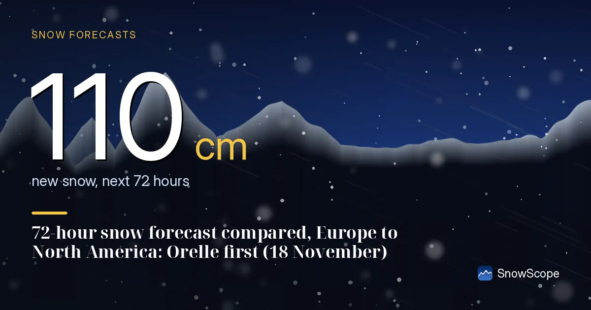
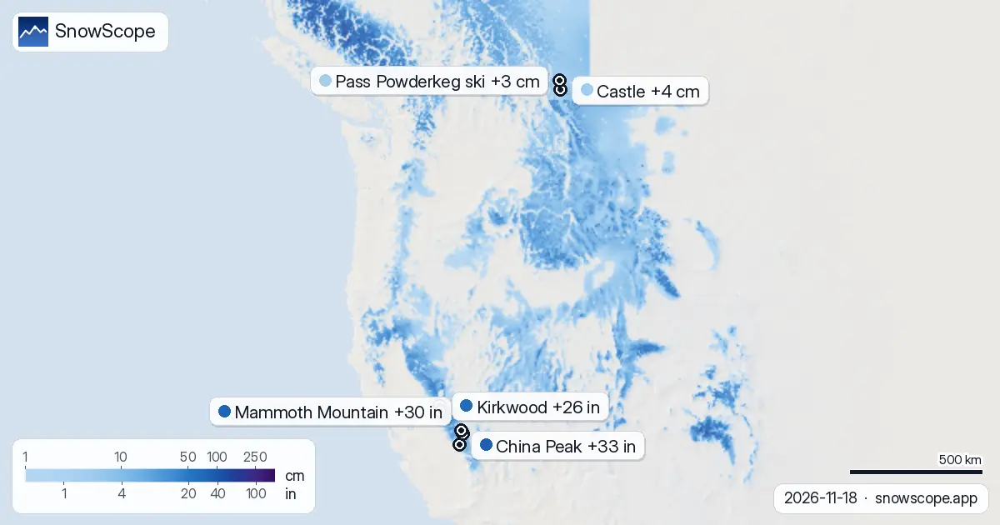

72-hour snow forecast compared, Europe to North America: Orelle first (18 November)
Orelle in the French Alps will see the most snow over the next three days: 110 cm by 21 November, with 50 cm falling in the first 24 hours. The ranking across Europe, the US West and Western Canada shows a sharp split: the Alps are in line for heavy snow, while Canada stays dry.
See the live snow forecast for Orelle in the SnowScope appSnow depth, powder alerts and the 3D map, free.
The Alpine storm
Orelle tops the forecast at 110 cm over three days, followed closely by Les Grands Montets and La Grave, both expecting around 105 cm. All three will see snow starting high: the freezing level stays above 2,500 m at Orelle and La Grave, above 1,800 m at Les Grands Montets. This means powder on the upper slopes; lower terrain will turn wet.
Le Grand Domaine, Les Arcs and Courmayeur each forecast 96 cm in three days. The pattern holds across the range: heavy falls, snow line varying by 300 to 400 metres between resorts depending on aspect and altitude. Glacier 3000 in Switzerland and La Martinaux will also see significant accumulation, though slightly less than the French peaks.
| # | Resort | Region | +24 h | +72 h | Snow line |
|---|---|---|---|---|---|
| 1 | Orelle | Alps · France | 50 cm | 110 cm | 2,500 m |
| 2 | Les Grands Montets | Alps · France | 42 cm | 105 cm | 1,800 m |
| 3 | La Grave | Alps · France | 51 cm | 104 cm | 2,900 m |
| 4 | Le Grand Domaine | Alps · France | 44 cm | 96 cm | 1,500 m |
| 5 | Les Arcs | Alps · France | 41 cm | 96 cm | 1,900 m |
| 6 | Courmayeur | Alps · Italy | 40 cm | 96 cm | 1,900 m |
| 7 | Glacier 3000 | Alps · Switzerland | 36 cm | 96 cm | 2,200 m |
| 8 | La Martinaux | Alps · Switzerland | 30 cm | 94 cm | 1,600 m |
| # | Resort | Region | +24 h | +72 h | Snow line |
|---|---|---|---|---|---|
| 1 | China Peak | US West · United States | 27 in (69 cm) | 33 in (83 cm) | 5,600 ft (1,700 m) |
| 2 | Mammoth Mountain | US West · United States | 26 in (67 cm) | 30 in (77 cm) | 5,900 ft (1,800 m) |
| 3 | June Mountain | US West · United States | 24 in (60 cm) | 28 in (70 cm) | 5,900 ft (1,800 m) |
| 4 | Kirkwood | US West · United States | 21 in (53 cm) | 26 in (66 cm) | 5,600 ft (1,700 m) |
| 5 | Bear Valley | US West · United States | 20 in (50 cm) | 25 in (64 cm) | 5,200 ft (1,600 m) |
| 6 | Kingvale | US West · United States | 19 in (49 cm) | 25 in (64 cm) | – |
| 7 | Dodge Ridge | US West · United States | 19 in (47 cm) | 25 in (64 cm) | 4,900 ft (1,500 m) |
| 8 | Badger Pass | US West · United States | 18 in (45 cm) | 24 in (61 cm) | 5,200 ft (1,600 m) |
| # | Resort | Region | +24 h | +72 h | Snow line |
|---|---|---|---|---|---|
| 1 | Castle | Western Canada · Canada | 1 cm | 4 cm | 1,000 m |
| 2 | Pass Powderkeg ski | Western Canada · Canada | 1 cm | 3 cm | 900 m |

How Orelle stacks against normal
Orelle is tracking slightly below its typical mid-November depth. The site stands at 54 cm today; a normal 18 November there holds 58 cm. However, the incoming snow will shift that balance. A week ago the same location measured only 12 cm, so the storm will roughly triple the base in three days.
Past winters show that snow this abundant at this height in mid-November is not routine. Only one winter in ten has seen 105 cm or more by this date at Orelle's elevation. The best snow season at Orelle typically arrives weeks later, in early or mid-March.

California draws its own weather
China Peak leads the US West with 69 cm forecast for the next 24 hours and 83 cm in total by 21 November. Mammoth Mountain follows: 67 cm tomorrow, 77 cm overall. Both sit in a storm track separate from the Alpine system. The snow line there ranges from 1,700 to 1,800 m—lower than Europe's—meaning wet snow will reach partway up each mountain.
June Mountain, Kirkwood and Bear Valley each expect 60 to 50 cm in 24 hours, with totals between 64 and 70 cm by Friday. These resorts lie south of the heaviest falls but still draw organised precipitation. The pattern is narrower in geographic scope and shorter in duration than what the Alps will experience.
Western Canada sits outside the storm
Castle and Pass Powderkeg ski will receive minimal snow: 1 cm and 3 cm respectively over three days. The snow line stays very low, near 900 to 1,000 m, so even this small amount will be partly wet. The storm systems affecting Europe and the US Sierra are too far south and east to reach the Canadian Rockies this week.
What the numbers mean
These are estimates for the upper slopes of each resort, valid through 21 November. Forecasts several days ahead can shift: check the map again 24 hours before you travel. The snow line marks the forecast freezing level minus about 300 m; above it, snow stays light and dry; below it, rain or wet snow mix in.
Fresh powder melts or hardens fast, especially in mid-November when days are still long. The best conditions will come the morning after the snow stops, before the sun and crowds reach the slopes. Plan your timing accordingly.
Tips for skiers
- Head to the highest lifts. At Orelle and La Grave, the snow line stays above 2,500 m, so aim for elevations well above that to stay in powder.
- Timing matters more than depth. Fresh snow turns to crust or slush by midday, so ski first thing. The next 24 hours at Orelle are critical: 50 cm will come during that window.
- If you are in the US West, the snow line sits lower (around 1,700 m); wet snow will be mixed in lower down. Upper runs at Mammoth and China Peak will be better.
- Before heading off-piste or touring, check the official avalanche bulletin for your area.
- Resort websites confirm lifts and opening dates. Snow on the forecast map does not guarantee a resort is operating.
- Set a powder alert in the SnowScope app to get a notification when fresh snow arrives at your chosen resort.
About these numbers
Resort snow depths are the deepest snow on the resort's upper slopes on the date shown; they are estimates for an area, not a measurement at one point. Forecasts can change. Always read the official avalanche bulletin before going off-piste.
Official avalanche bulletins: EAWS (Europe) · avalanche.org (US) · Avalanche Canada
Cite this report
For research, teaching or the press: the numbers and charts are free to reuse under CC BY 4.0 with this citation.
SnowScope (2026), 72-hour snow forecast compared, Europe to North America: Orelle first (18 November), https://snowscope.app/blog/en/2026/11/where-most-snow-falls-next-72-hours-18-november-2026.html, accessed 2026-11-18
SnowScope (Atlas Labs). (2026, November 18). 72-hour snow forecast compared, Europe to North America: Orelle first (18 November). SnowScope snow reports. https://snowscope.app/blog/en/2026/11/where-most-snow-falls-next-72-hours-18-november-2026.html
BibTeX
@misc{snowscope2026wheremostsnowfallsnext72,
author = {{SnowScope (Atlas Labs)}},
title = {72-hour snow forecast compared, Europe to North America: Orelle first (18 November)},
year = {2026},
month = nov,
howpublished = {\url{https://snowscope.app/blog/en/2026/11/where-most-snow-falls-next-72-hours-18-november-2026.html}},
note = {Published 2026-11-18 10:29 UTC; accessed 2026-11-18}
}· CC BY 4.0 · Methods, data and tools →
Orelle: snow and temperature by height, this winter vs last (tools) →
Follow Orelle
Free: a message when fresh snow is coming, and the forecast every morning.
More snow reports

Alpine snow forecast 18 November: 110 cm expected at Orelle, 105 cm at Les Grands Montets. Best snow arrives Thursday and Friday.

La Grave's snowpack grew 17 cm in a week to 43 cm on 14 November, now forecast to gain 61 cm over the next 72 hours as a system moves across the Alps.

Courmayeur leads forecast with 88 cm in 72 hours; snow depth is at 142 percent of normal for mid-November as of November 15 data.